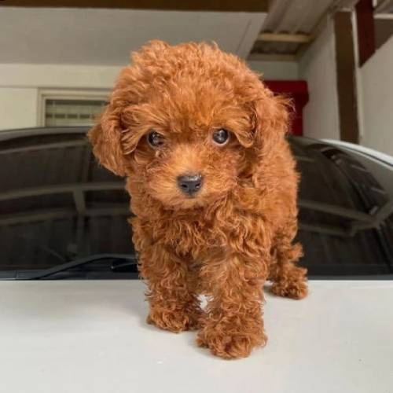
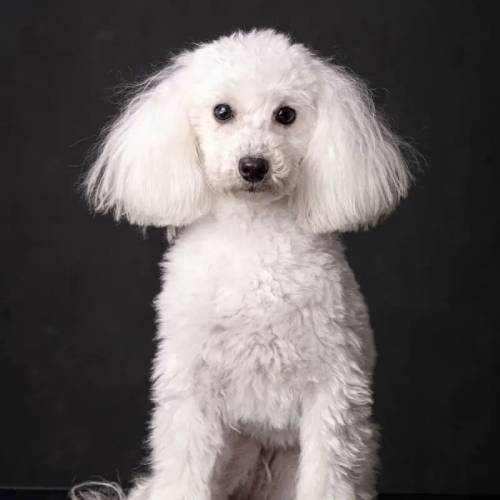

Il Barboncino è un cane di taglia variabile (toy, nano o standard), noto per il suo pelo riccio, denso e ipoallergenico. È molto intelligente, vivace e socievole, con un carattere allegro e affettuoso. Ottimo cane da compagnia, si adatta bene alla vita in famiglia e ama essere coinvolto nelle attività quotidiane. Richiede una buona cura del pelo e regolare attività fisica per mantenersi in salute e felice.
Il Barboncino maschio varia molto in dimensioni a seconda della varietà (toy, nano o standard), ma generalmente ha un corpo proporzionato, elegante e agile. Ha un pelo riccio e denso che richiede cure regolari per evitare nodi. È molto intelligente, energico e affettuoso, con un carattere socievole e giocoso. Ama stare con la famiglia ed è molto addestrabile, rendendolo ideale anche per attività sportive o di obbedienza.
La femmina di Barboncino, come il maschio, può variare nelle dimensioni a seconda della varietà (toy, nano o standard), ed è generalmente leggermente più piccola e delicata. Ha un mantello riccio, denso e soffice che necessita di cure regolari per mantenerlo bello e senza nodi. È intelligente, vivace e molto affettuosa, con un carattere dolce e socievole. Ama l’interazione con la famiglia ed è molto adattabile, perfetta come compagna di giochi e attività.